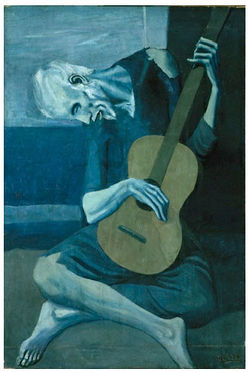
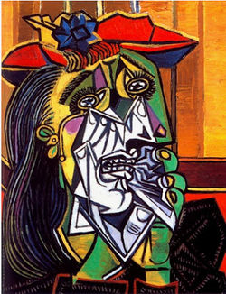
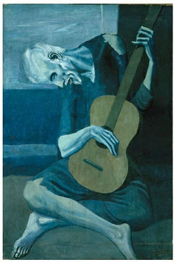
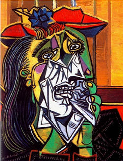
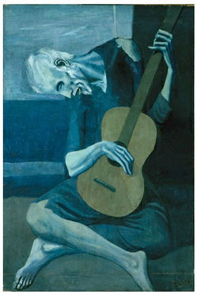
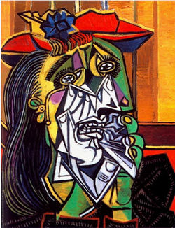

(Pablo Ruiz Picasso; Málaga, 1881 - Moulins, Francia, 1973) Pintor español. La trascendencia de Picasso no se agota en la fundación del cubismo, revolucionaria tendencia que rompió definitivamente con la representación tradicional al liquidar la perspectiva y el punto de vista único. A lo largo de su dilatada trayectoria, Pablo Picasso exploró incesantemente nuevos caminos e influyó en todas la facetas del arte del siglo XX, encarnando como ningún otro la inquietud y receptividad del artista contemporáneo. Su total entrega a la labor creadora y su personalidad vitalista, por otra parte, nunca lo alejarían de los problemas de su tiempo; una de sus obras maestras, el Guernica (1937), es la mejor ilustración de su condición de artista comprometido. Pablo Picasso Hijo del también artista José Ruiz Blasco, en 1895 se trasladó con su familia a Barcelona, donde el joven pintor se rodeó de un grupo de artistas y literatos, entre los que cabe citar a los pintores Ramón Casas y Santiago Rusiñol, con quienes acostumbraba reunirse en el bar Els Quatre Gats. Entre 1901 y 1904, Pablo Picasso alternó su residencia entre Madrid, Barcelona y París, mientras su pintura entraba en la etapa denominada período azul, fuertemente influida por el simbolismo. En la primavera de 1904, Picasso decidió trasladarse definitivamente a París y establecerse en un estudio en las riberas del Sena. En la capital francesa trabó amistad, entre otros, con los poetas Guillaume Apollinaire y Max Jacob y con el dramaturgo André Salmon; entre tanto, su pintura experimentó una nueva evolución, caracterizada por una paleta cromática tendente a los colores tierra y rosa (período rosa). Al poco de llegar a París entró en contacto con personalidades periféricas del mundillo artístico y bohemio, como los hermanos estadounidenses Leo y Gertrude Stein, o el que sería ya para siempre su marchante, Daniel-Henry Kahnweiler. A finales de 1906, Pablo Picasso empezó a trabajar en una composición de gran formato que iba a cambiar el curso del arte del siglo XX: Les demoiselles d'Avignon. En esta obra cumbre confluyeron numerosas influencias, entre las que cabe citar como principales el arte africano e ibérico y elementos tomados de El Greco y Cézanne. Bajo la constante influencia de este último, y en compañía de otro joven pintor, Georges Braque, Pablo Picasso se adentró en una revisión de buena parte de la herencia plástica vigente desde el Renacimiento, especialmente en el ámbito de la representación pictórica del volumen. Las tramas geométricas eliminan la profundidad espacial e introducen el tiempo como dimensión al simultanear diversos puntos de vista: era el inicio del cubismo.

